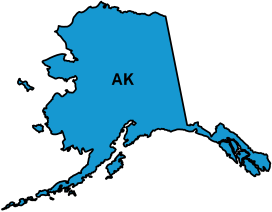
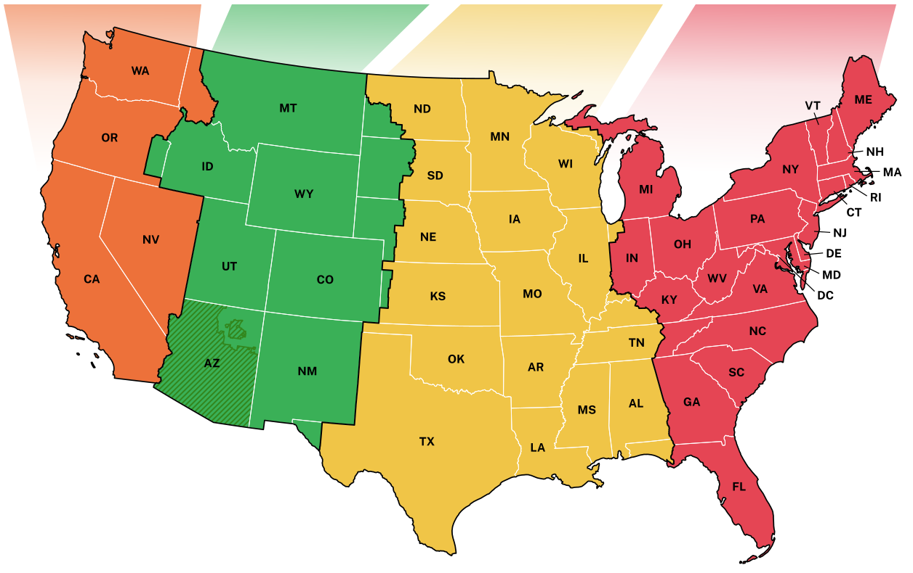

Non-Contiguous U.S. and Territories
Alaska Standard Time
AKST (UTC-9)

Aleutian Standard Time
HAST (UTC-10)
Hawaii Standard Time
HST (UTC-10)
Samoa Standard Time
SST (UTC-11)
Chamorro Standard Time
CHST (UTC+10)
Atlantic Standard Time
Puerto Rico / US Virgin Islands
AST (UTC-4)
Pacific Standard Time
PST (UTC-8)
SYNCHRONIZING
Mountain Standard Time
MST (UTC-7)
Central Standard Time
CST (UTC-6)
Eastern Standard Time
EST (UTC-5)
Arizona Mountain
Standard Time
Standard Time
MST (UTC-7)

Coordinated Universal Time (UTC)
UTC is always displayed as a 24-hour clock.
Your Device's Clock UTC-0
Your clock is off by:
s
Atlantic Standard Time
Puerto Rico / US Virgin Islands
AST (UTC-4)